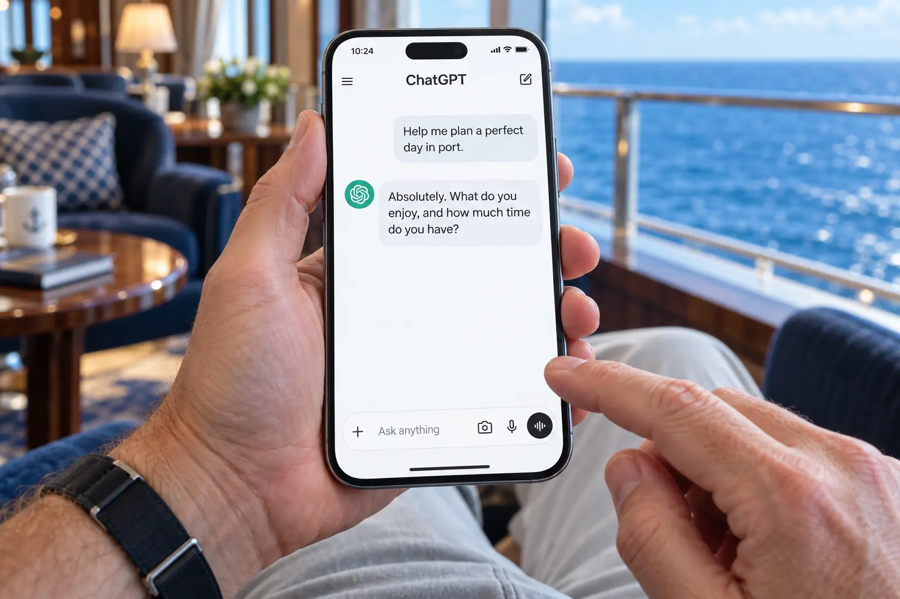

01 / Your intelligent hub
Getting the Most from ChatGPT
45 minutes + 15 minutes of Q&A
Your phone just became a lot more useful.
Turn “Where do I start?” into “What else can I do?” Discover five practical ways to use ChatGPT, with simple demonstrations you can try before dinner.
- Get advice that fits your situation.
- Create photos and find the right words.
- Type, talk, or show AI what you mean.
View session detailsHide session details
- Get a thinking partner. Explore travel choices, work through a tricky conversation, or prepare questions for your doctor—with context, follow-up questions, and a second perspective.
- Create and fix photos. Turn an idea into an image, remove a distraction, or give a favorite picture a fresh look.
- Find the right words. Draft an email, shape a proposal, or write a speech that sounds like you.
- Make a plan you’ll actually use. Build a day in port, a dinner menu, or a packing list around your preferences.
- Learn by showing and asking. Explore a new topic, upload a photo, or use voice and supported live-video features to talk through what you’re looking at.
Along the way: what to share, what to double-check, and which features depend on your plan or device.
Leave with five reasons to open ChatGPT tomorrow.
Featuring ChatGPT · No experience needed